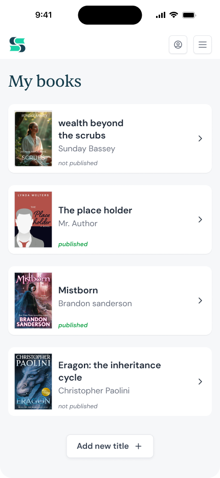
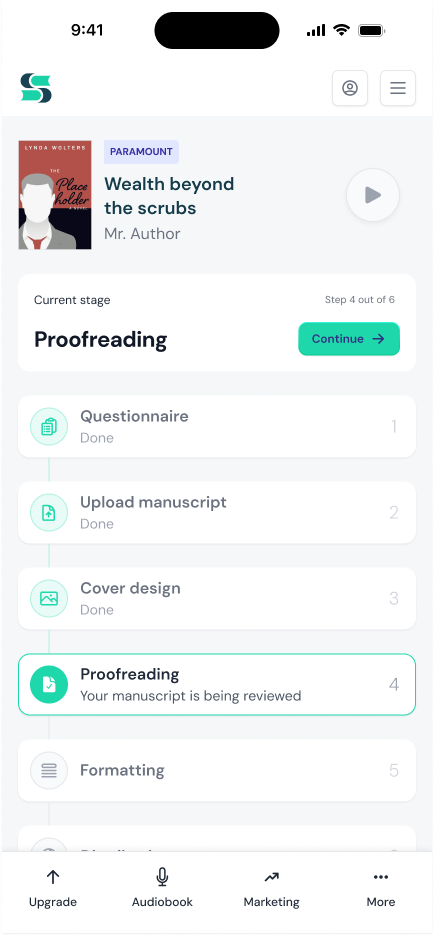
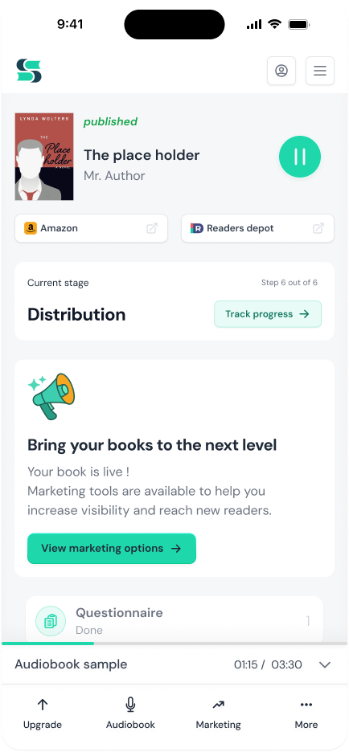

Spines - Mobile Dashboard
- Company
- Spines
- Role
- Product Designer
- Platform
- Mobile
The existing dashboard was a single static view that didn't change based on where an author was in their publishing process. The same screen served someone just starting out and someone whose book had already shipped. The redesign replaced it with three dashboard states: library, in progress, and published. Each has a distinct focal point matched to that stage, so the interface always reflects where the author actually is.
State 1: Library
A clear entry point
Authors land on a library view showing all their books and each one's current status at a glance. The decision to lead with the library, rather than a single active project, was intentional: most authors at Spines have more than one title at different stages, and a list view makes that visible without extra navigation.
- Published vs. in-progress status immediately visible
- Minimal, scannable list layout
- Direct entry point to start a new title

State 2: In Progress
Always know the next step
For active projects, the dashboard is built around one question: what does the author need to do right now? A single primary action points to the current stage. A vertical timeline below it shows the full pipeline, so authors can see progress without having to navigate away from the screen.
- Prominent current-stage action, no hunting required
- Step-by-step timeline with clear progress indicators
- Plan and audiobook access without disrupting the flow

State 3: Published
From production to growth
Once a book is live, production is done and the dashboard reflects that. The interface shifts focus entirely: retail channels, marketing tools, and the author's next move. The same screen that tracked progress now points forward toward growth and the next project.
- Direct links to Amazon and other retail channels
- Marketing tools surfaced at the point of publication
- Surfaces the author's next move: upsell, marketing, or starting another book

The Structure
The previous mobile dashboard was a compressed version of the web experience. Most of the same information, reduced to fit a smaller screen. The design challenge was not to add states - it was to decide what to remove.
On mobile, an author should be able to check their book in seconds. The redesign was built around one question: what does the author actually need to know right now, and what can be left out? That meant cutting detail that is useful on desktop but adds noise on mobile - and organizing what remained around three clear situations: a book in progress, a published book, and the library view.
The three-state model came from deciding what matters at each stage, not from exposing the production system in smaller form.
Outcome
The redesign established an approved product direction for the mobile author experience. The three-state model replaces a static single-view dashboard with one that reflects where the author actually is in the publishing journey, rather than showing the same information at every stage.